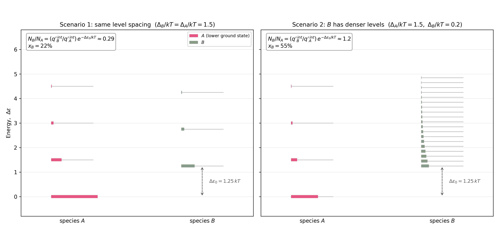

Uke 10 – Likevekt#
Diskusjonsoppgaver#
Oppgave 1#
a) Hvilke tre typer likevekter skiller vi mellom i dette kurset, og hva er drivkreftene bak dem?
Svar Vi skiller mellom termisk, mekanisk og kjemisk likevekt. Termisk likevekt drives av temperaturforskjeller, og det vil være en netto varmeoverføring frem til temperaturen er lik. Mekanisk likevekt drives av trykkforskjeller, og et bevegelig skille mellom to sider med ulikt trykk vil flytte seg til trykket er likt på begge sider. En kjemisk likevekt er drevet av forskjeller i kjemisk potensial.
b) Fra et mikroskopisk perspektiv, forklar hvordan drivkreftene nevnt i a) fører til endring i systemet.
Svar
Termisk likevekt: Temperatur er et mål på partiklenes gjennomsnittlige kinetiske energi. Varmestrøm er overføring av bevegelsesenergi gjennom kollisjoner.
Trykk oppstår mikroskopisk fra partiklenes støt mot en vegg, som er summen av bevegelsesmengde som overføres per areal per tid. En trykkforskjell vil gi en større kraft i en retning på én side, så grensen vil skyves frem til kraften utlignes av den andre siden.
Kjemisk potensial beskriver hvordan systemets energi endres når man endrer antallet av et specie. Det har både en energidel (bindinger og vekselvirkninger) og en entropidel (hvor mange måter partiklene kan fordeles på, altså konsentrasjon/blanding). Partikler har en tendens til å spre seg ut og til å søke lavere energi, begge deler er «bakt inn» i \(\mu\).
c) Et grunnleggende krav for innstilling av likevekt, som vi har sett på flere ganger, er maksimering av entropi. Når er ikke dette alene lenger nok til å definere likevekt?
Svar Entropimaksimering av systemet alene er likevektskriteriet for et isolert system, der blant annet \(U\), \(V\) og stoffmengdene er konstante. Når systemet kan utveksle energi med omgivelsene, må vi i stedet betrakte entropien til system og omgivelser samlet. Ved konstant temperatur og volum er \(\Delta S_{\mathrm{omg}}=-\Delta U_{\mathrm{sys}}/T\), og likevekten svarer til et minimum i Helmholtz-energien \(A=U-TS\). Ved konstant temperatur og trykk er \(\Delta S_{\mathrm{omg}}=-\Delta H_{\mathrm{sys}}/T\), og likevekten svarer til et minimum i Gibbs-energien \(G=H-TS\). Se diskusjonsoppgave 1 uke 7.
d) Hvorfor kan vi si at alle de nevnte likevektene er dynamiske?
Svar Ved likevekt er det ingen netto endring i systemets makroskopiske egenskaper, men de mikroskopiske prosessene stopper ikke opp selv om likevekt er oppnådd, endringen skjer bare like raskt i begge retninger av likevekten.
Oppgave 2#
Vi ser på en generell reaksjon \(A_{(g)} \rightleftharpoons \ B_{(g)}\). Senere i oppgaven skal vi se på to ulike tilfeller. I tilfelle 1 er tettheten mellom energinivåene tilsvarende for A og B, noe vi f.eks. finner i reaksjoner hvor A og B er ulike cis/trans konfigurasjoner av samme molekyl. I tilfelle 2 ligger energinivåene i B langt tettere enn i A (et eksempel kan være at A er en stiv ringkonformasjon i likevekt med en mer fleksibel, ikke-planar konformasjon (B))
a) Hva er \({\Delta }_{\mathrm{r}}G\), Likevektskonstanten \(K\) og reaksjonskvotienten \(Q\). Hva er forskjellen på \({\Delta }^0_{\mathrm{r}}G\) og \({\Delta }_{\mathrm{r}}G\)?
b Hva kan vi si om \({\Delta }_{\mathrm{r}}G\) for:
Der reaksjonen \(A_{(g)} \rightarrow \ B_{(g)}\) er spontan
Der reaksjonen \(B_{(g)} \rightarrow \ A_{(g)}\) er spontan
Ved likevekt
Svar
Sammenhengen mellom standard reaksjons-Gibbsenergi og likevektskonstanten er gitt ved følgende likninger:
Likevektskonstanten \(K\) har en fast verdi ved en gitt temperatur (og ellers standardbetingelser), og forteller hvor likevekten ligger.
Det er videre viktig å skille mellom standard reaksjons-Gibbsenergi og reaksjonens Gibbsenergi ved den aktuelle sammensetningen. Sammenhengen \(\Delta_rG^\circ=-RT\ln K\) sier hvor likevekten ligger, mens den aktuelle retningen bestemmes av \(\Delta_rG=\Delta_rG^\circ+RT\ln Q\).
Om reaksjonen faktisk går forover i et gitt øyeblikk, bestemmes ikke av \(K\) alene, men av reaksjonskvotienten, (Q). Ved en gitt sammensetning går reaksjonen spontant forover når \(Q<K\) (\(\Delta_rG<0\)), spontant bakover når \(Q>K\) (\(\Delta_rG>0\)), og er ved likevekt når \(Q=K\) (\(\Delta_rG=0\)).
obs! merk at likevektskonstanten ikke er avhengig av trykk eller sammensetning, kun av temperatur. Endring i trykk eller sammensetning vil påvirke Q, ikke K.
Oppgave 3#
For reaksjonen i oppgave 2 skal vi nå sette opp et utrykk for likevektskonstanten K utifra partisjonsfunksjonene for A og B.
a) Hva er formelen for den molekylære partisjonsfunskjonen, \(q_i'\) til en gitt specie \(i\)?
Svar Partisjonsfunksjonen med grunntilstandsenergien eksplisitt inkludert er
b) Vi kan splitte partisjonsfunsjonen til et produkt av partisjonsfunskjonen for grunntilstanden \(q_0\) med energi \(\varepsilon_{0}\) og resten av partisjonsfunksjonen \(q\). Dette gjør at vi kan skrive de høyereordens energinivåene, \(j\geq1\) som forskjellen \(\varepsilon_{j}-\varepsilon_{0}\). Hvordan ser dette utrykket ut?
Svar Den reduserte partisjonsfunksjonen \(q_i\) fås ved å faktorisere ut grunntilstandsleddet:
c) Hva kan vi si om de kjemiske potensialene for de to speciene ved likevekt, \(\mu_A\) og \(\mu_B\)?
Svar Ved likevekt er de to kjemiske potesialene like:
d) Vi kan utrykke det kjemiske potensialet for en specie \(i\) utifra Helmholtz fri energi og ender opp med utrykket:
der \(q_i'\) er den redusertepartisjonsfunskjonen (partisjonsfunskjonen relativt til grunntilstanden) for specie \(i\)
Uttrykk likevektskonstanten K som en funksjon av partisjonsfunksjonene for A og B.
e) Bruk sammenhengen under til å forenkle utrykket for K:
Diskuter hva termen \((\varepsilon_{0,B}-\varepsilon_{0,A})\) betyr.
Svar d) og e)
For pilretningen \(A\rightarrow B\) definerer vi \(K=N_B/N_A\).
Ved likevekt er \(\mu_A=\mu_B\), og vi vet at er \(\mu_i=-kT\ln(q_i'/N_i)\). Dermed får vi:
Til slutt setter vi \(q_i'=e^{-\varepsilon_{0,i}/kT}q_i\) inn i forholdet \(K=q_B'/q_A'\). For hver art er partisjonsfunksjonen med primtegn produktet av en faktor fra grunntilstandsenergien og den reduserte partisjonsfunksjonen:
Vi samler først partisjonsfunksjonene og deretter eksponentialfaktorene:
Dermed blir
Her beskriver \(q_B/q_A\) bidraget fra hvor mange tilstander som er tilgjengelige over grunntilstanden, mens \((\varepsilon_{0,B}-\varepsilon_{0,A})\) i eksponentialfaktoren er forskjellen i grunntilstandsenergiene for A og B. Hvis B har høyere grunntilstandsenergi enn A, er \(\varepsilon_{0,B}-\varepsilon_{0,A}>0\), og derfor er \(e^{-(\varepsilon_{0,B}-\varepsilon_{0,A})/kT}<1\): dette bidraget favoriserer A. En større \(q_B/q_A\) kan likevel oppveie denne energiforskjellen og gjøre \(K>1\) alstå at B favoriseres.
Ekstra: kjemisk potensial fra partisjonsfunksjonen. For en ideal blanding av ikke-vekselvirkende arter hvor \(q_i'\) være énpartikkelpartisjonsfunksjonen for art \(i\). Partisjonsfunksjonen for blandingen er
Helmholtz-energien blir \(A=-kT\ln\mathcal Q_{\mathrm{mix}}\), altså
For store \(N_i\) bruker vi Stirlings tilnærming \(\ln N_i!\approx N_i\ln N_i-N_i\). Da får vi
Ved derivasjonen holdes \(q_i'\) konstant ved fast \(T,V\). For leddet som gjelder art \(i\) får vi
Kjemisk potensial er den partielle deriverte av Helmholtz-energien med hensyn på \(N_i\), ved konstant \(T\), \(V\) og stoffmengdene til de andre artene. Dermed
f) Bruk svaret fra forrige oppgave og plottet under til å forklare hvorfor specie A er favorisert dersom avstanden mellom energinivåene er omtrent like, men nivåene på grunntilstandene er ulike, \(\varepsilon_{0,A} < \varepsilon_{0,B}\).

Svar Når avstandene mellom nivåene målt fra hver arts grunntilstand er omtrent like, er de reduserte partisjonsfunksjonene omtrent like: \(q_A\approx q_B\). Da blir \(K\approx e^{-(\varepsilon_{0,B}-\varepsilon_{0,A})/kT}\). Siden \(\varepsilon_{0,B}>\varepsilon_{0,A}\), er \(K<1\), og likevekten favoriserer A.
g) Hvorfor favoriseres specie B når tettheten av tilstander i B er langt større enn i A? (Diskuter ved å trekke inn partisjonsfunksjone - stor når mange tilstander er tilgjengelige!)
Svar Tettere energinivåer for B gir en større redusert partisjonsfunksjon \(q_B\), fordi flere nivåer bidrar til summen av Boltzmann-faktorer. Selv om grunntilstanden til B ligger høyere, kan forholdet \(q_B/q_A\) bli stort nok til å oppveie faktoren \(e^{-(\varepsilon_{0,B}-\varepsilon_{0,A})/kT}\). Da kan \(K>1\), og B får størst totalpopulasjon. Det er summen over alle nivåene, ikke bare grunntilstandene, som bestemmer forholdet \(N_B/N_A\).
h) Er reaksjonene illustrert i plottene over endoterme eller eksoterme? Diskuter hvorfor utifra energinivåene.
Svar I energinivåmodellen ligger grunntilstanden til B høyere enn grunntilstanden til A, altså er \(\varepsilon_{0,B}-\varepsilon_{0,A}>0\). Overgangen \(A\rightarrow B\) krever derfor energi i denne modellen og beskrives som endoterm.
Oppgave 4#
a) Hva sier Le Chateliers prinsipp?
Svar Når et system i likevekt påføres en forstyrrelse – endring av temperatur, trykk/volum eller sammensetning – vil systemet svare ved å flytte likevekten i den retningen som motvirker forstyrrelsen, til en ny likevekt er innstilt. En forstyrrelse vil gi \(\mu_A ≠ \mu_B\), og systemet vil svare ved å redusere \({\Delta_\mathrm{r}G}\) til null igjen (ved konstant trykk og temperatur).
b) Hvordan kan vi benytte Le Chateliers prinsipp til å manipulere eksergone/endergone prosesser?
Svar
\({\Delta_\mathrm{r}G} = {\Delta_\mathrm{r}G}^{\circ} + RT\ln Q\) viser hvordan ulike påvirkninger kan endre reaksjonsretningen eller likevektsposisjonen:
Sammensetning: Å fjerne produkt løpende (felling, destillering, Dean–Stark) eller å tilsette reaktant kan holde \(Q<K\), slik at \(\Delta_\mathrm{r}G<0\) og reaksjonen drives forover selv om \(\Delta_\mathrm{r}G^\circ>0\). Tilsetting av produkt øker \(Q\) og kan gjøre \(Q>K\), slik at \(\Delta_\mathrm{r}G>0\) og netto reaksjon går bakover. Sammensetningsendringer påvirker \(Q\) og \(\Delta_\mathrm{r}G\), ikke \(\Delta_\mathrm{r}G^\circ\) eller \(K\) ved konstant temperatur.
For gasser kan man endre trykk eller volum: Endring av \(p\) eller \(V\) endrer partialtrykkene og dermed \(Q\) hvis \(\Delta n_\mathrm{gass} \ne 0\); systemet svarer med en endring som favoriserer siden med færrest partikler ved komprimering.
Temperatur: Fra van’t Hoff-ligningen har vi \(\dfrac{d\ln K}{dT} = \dfrac{\Delta_\mathrm{r}H^\circ}{RT^2}\). Oppvarming øker \(K\) for en endoterm reaksjon (\(\Delta_\mathrm{r}H^\circ>0\)) og minker \(K\) for en eksoterm reaksjon (\(\Delta_\mathrm{r}H^\circ<0\)).
c) I en esterifisering av karboksylsyrer (karboksylsyre + alkohol \(\rightleftharpoons\) ester + \(H_2O\)) brukes ofte et Dean-Stark apparat til å kontinuerlig fjerne vanndamp. Forklar hvordan dette påvirker likevekten ved å holde prosessen eksergon.
Svar Uten fjerning av vann vil \(\Delta_\mathrm{r}G\) gå mot null når \(Q \to K\), og esterifiseringen stopper ved en endelig blanding (både syre og alkohol kan da være igjen i store mengder). Med Dean-Stark oppsett fjernes vand fortløpende og \( \)Q \ll K\( → \){\Delta_\mathrm{r}G} = {\Delta_\mathrm{r}G}^{\circ} + RT\ln Q < 0$. Systemet vil i teorien da aldri oppnå likevekt og så lenge vannet fjernes og det er reaktanter tilstede vil esterifiseringen gå. I praksis vil man nå en grense hvor utbytte av å fortsette reaksjonen blir svært liten i forhold til hastigheten på reaksjonen.
d) Hvordan ville reaksjonene i forrige oppgave blitt påvirket av en temperaturøkning?
Forslag I modellen i oppgaven ligger grunntilstanden til B høyere enn den til A, slik at reaksjonen A \(\rightarrow\) B behandles som endoterm. Da vil en temperaturøkning forskyve likevekten mot B. Boltzmann-faktoren \(e^{-(\varepsilon_{0,B}-\varepsilon_{0,A})/kT}\) øker når temperaturen øker. I scenario 2 bidrar også den større tettheten av tilstander i B til å favorisere B. Generelt bestemmes temperaturvirkningen av reaksjonsentalpien, slik van’t Hoff-ligningen uttrykker.
e) For en reaksjon \(A \ \rightleftharpoons 2 \, B\ _{(g)}\), hvordan påvirkes likevekten av økt/senket trykk? Hvorfor er det sånn?
Forslag
Fra Le Chateliers prinsipp har vi at komprimering (altså økt totaltrykk) presser likevekten mot A (færrest partikler), mens lavere trykk favoriserer B.
Dette kan man også se utifra likevekstkonstanten og reaksjonskvotienten:
\(Q = \dfrac{(p_B/p^\circ)^2}{p_A/p^\circ}\).
Med totaltrykk \(P\): \(p_B = x_B P\), \(p_A = (1-x_B)P\), får vi
Ved konstant temperatur er \(K\) uavhengig av trykket. Uttrykket over viser at når totaltrykket økes ved komprimering, må likevektsverdien av \(x_B\) minke. Likevekten forskyves dermed mot venstre, siden venstresiden har færre mol gass.
f) Hvordan påvirker en katalysator eller et enzym en likevekt? Begrunn svaret deres.
Svar
Katalysatorer/enzymer påvirker ikke likevekten direkte. De senker aktiveringsenergien ved å f.eks. stabilisere en overgangstilstand, og vil dermed påvirke reaksjonshastigheten, ikke likevekten.
Regneoppgaver#
Oppgave 1#
Ved 3000 K i en industriell prosess er partialtrykkene ved likevekt for \(CO_2\), \(CO\), og \(O_2\) henholdsvis \(0.6\), \(0.4\), og \(0.2\) atm. Beregn \(\Delta G_m^\circ\) (ved 3000 K) for reaksjonen
Svar
Vi vet at standard trykk, \(p_0\), er 1 bar. Vi må derfor konvertere partialtrykkene fra atm til bar med konverteringsfaktoren \(1 atm = 1.01325 bar\). Likevektskonstanten kan vi da uttrykke ved partialtrykk på følgende måte:
Finner så \(\Delta G_{m}^\circ = -RT \ln{K_p} = -8.31446 J K^{-1} mol^{-1} \cdot 3000 K \cdot \ln{0.091} = 60.0 kJ/mol \)
Oppgave 2#
Beregn følgende størrelser for reaksjonen
a) \(\Delta_rG^\circ\), \(\Delta_rH^\circ\), \(\Delta_rS^\circ\) ved standardbetingelser. Angi referansetilstand.
Svar
Vi ønsker å finne endringen i Gibbs energi, entalpi og entropi for reaksjonen ved standard betingelser - og kan derfor benytte oss av Hess’ lov og tabulerte verdier. For referansetilstanden på 1 bar (standard trykk) finner vi:
b) \(K_p\) ved \(298.15 K\).
Svar
Ved referansetilstand 1 bar kan vi bruke endringen i Gibbs frie energi for å finne \(K_p\):
Altså er reaksjonen drevet enormt mot produktet.
c) \(K_c\) ved \(298.15 K\), referansetilstand er 1M.
Svar
For å finne likevektskonstanten ved referansetilstand 1 M kan vi bruke definisjonen for likevektskonstanten gitt ved aktivitetene (se Atkins side 210/211):
Når vi jobber med konsentrasjoner kan vi tilnærme aktiviteten i likevektsuttrykket med med molar konsentrasjon:
Vi får da
Dette kan vi relatere til likevektskonstanten K_p ved å anta ideell oppførsel (husk også at vi jobber med molar konsentrasjon!):
Setter inn for \(K_p\)
d) \(\Delta_rG^\circ\), referansetilstand er 1M.
Svar
Bruker igjen sammenhengen mellom Gibbs frie energi og likevektskonstanten:
e) \(K_p\) ved \(373.15 K\) (anta at entalpi og entropi er temperatur-uavhengig.)
Svar
Ved referansetilstand 1 bar:
En temperaturøkning skyver likevekten noe mindre mot produktet, prosessen er eksoterm.
\(C_2H_4\): \(\Delta_fG^\circ = 68.4 kJ/mol\), \(\Delta_fH^\circ = 52.4 kJ/mol\)
\(C_2H_6\): \(\Delta_fG^\circ = -32.0 kJ/mol\), \(\Delta_fH^\circ = -84.0 kJ/mol\)
Oppgave 3#
Fosforpentaklorid, \(PCl_5\), dissosierer i gassfase til fosfortriklorid, \(PCl_3\), og klorgass, \(Cl_2\):
Ved \(250\,°C\) og trykket \(1.00\,bar\) er gassens tetthet \(2.66\,g\,dm^{-3}\). Finn dissosiasjonsgraden, og likevektskonstantene \(K_c\), \(K_p\), og \(K_x\) ved disse betingelsene. I hvilken retning forskyves likevekten hvis trykket økes ved å tilsette \(Ar{(g)}\)?
Svar $\(\mathrm{PCl}_5(g) \;\rightleftharpoons\; \mathrm{PCl}_3(g) + \mathrm{Cl}_2(g)\)$
Ved \(250\ ^{\circ}\mathrm{C} = 523{.}15\ \mathrm{K}\) har vi \(p = 1{.}00\ \mathrm{bar}, \qquad \rho = 2{.}66\ \mathrm{g/dm^3}\)
Molmassene er \(M_{\mathrm{PCl}_5} = 208{.}24\), \(\ M_{\mathrm{PCl}_3} = 137{.}33\), \(\ M_{\mathrm{Cl}_2} = 70{.}91\ \mathrm{g/mol}\).
Setter opp likevekten med dissosiasjonsgrad α:
Vi starter med \(n_0\) mol PCl₅ og lar en andel, \(\alpha\), dissosiere:
PCl₅ |
PCl₃ |
Cl₂ |
|
|---|---|---|---|
Start |
\(n_0\) |
\(0\) |
\(0\) |
Likevekt |
\(n_0(1-\alpha)\) |
\(n_0\alpha\) |
\(n_0\alpha\) |
Totalt antall mol er \(\;n_\mathrm{tot} = n_0(1+\alpha)\). Merk at hvert PCl₅ som spaltes gir to molekyler, så gassmengden øker.
Finner så α fra tettheten:
Massen er bevart under spaltingen (i likevekten kan vi verken miste eller danne mer total masse), så gjennomsnittlig molmasse blir
Vi kan deretter bruke informasjonen gitt i oppgaven til å regne ut en verdi for gjennomsnittlig molar masse (\(\rho = m/V\) og hvis vi antar ideelle gasser har vi at \(pV = nRT\)):
Løser for α:
Finner så molfraksjonene:
Likevektskonstanten gitt ved molfraksjoner, Kₓ, blir da
Og gitt ved partialtrykkene (K_p):
Med \(p_i = x_i\,p\) og \(p = 1{.}00\ \mathrm{bar}\):
Total konsentrasjon er intensiv, så vi trenger ikke velge noe volum, og likevektskonstanten gitt ved konsentrasjoner blir da
Sjekker at likevektskonstantene ved konsentrasjon og trykk følger sin kjente sammenheng: \(K_c = K_p\,\left(\dfrac{p^\circ}{c^\circ RT}\right)^{\Delta n} = 1{.}78 \cdot 0{.}0230 = 0{.}0409\)
Hva skjer når man tilsetter Ar?
Når Ar tilsettes for å øke trykket, skjer det ved konstant volum og temperatur. Partialtrykkene til de reagerende gassene avhenger bare av deres egne stoffmengder og volumet:
Ar endrer verken \(n_{\mathrm{PCl}_5}\), \(n_{\mathrm{PCl}_3}\), \(n_{\mathrm{Cl}_2}\) eller \(V\), så alle partialtrykkene er uendret. Da er reaksjonskvotienten fortsatt lik \(K_p\):
Likevekten forskyves ikke, Ar øker det totale trykket, men ikke partialtrykkene til reaktantene/produktene.
Oppgave 4#
Nitrogendioksid, \(NO2\), forekommer i likevekt med dinitrogentetraoksid, \(N_2O_4\):
Ved \(25 ^{\circ} C\) og \(0.597 \, bar\) er gassens tetthet \(1.477 \, g.dm^{-3}\). Finn dissosiasjonsgraden, og likevektskonstantene \(K_c\), \(K_P\), og \(K_x\) ved disse betingelsene. I hvilken retning forskyves likevekten hvis trykket økes ved å tilsette \(He{(g)}\)?
Svar
Setter først opp en oversikt over informasjonen gitt i teksten:
\(T = 25\ ^{\circ}\text{C} = 298{.}15\ \text{K}\), \(\ p = 0{.}597\ \text{bar}\), \(\ \rho = 1{.}477\ \text{g/dm}^3\) \(M_{\text{N}_2\text{O}_4} = 92{.}02\ \text{g/mol}\), \(\quad M_{\text{NO}_2} = 46{.}01\ \text{g/mol}\)
Setter så opp likevekten med dissosiasjonsgrad α:
Vi starter med \(n_0\) mol N₂O₄ og lar en andel \(\alpha\) dissosiere:
N₂O₄ |
NO₂ |
|
|---|---|---|
Start |
\(n_0\) |
\(0\) |
Endring |
\(-n_0\alpha\) |
\(+2n_0\alpha\) |
Likevekt |
\(n_0(1-\alpha)\) |
\(2n_0\alpha\) |
Totalt antall mol: \(\;n_\text{tot} =n_0(1-\alpha)+ 2n_0\alpha= n_0 + 2n_0\alpha - n_0\alpha = n_0(1+\alpha)\).
Finner α fra tettheten:
Massen er bevart når N₂O₄ spaltes, så gjennomsnittlig molmasse blir
Samtidig gir idealgassloven (\(\rho = \tfrac{m}{V} = \frac{mp}{nRT} = \frac{Mp}{RT}\)):
Løser for α:
Molfraksjonene blir da:
Kₓ (fra molfraksjoner):
K_p (fra partialtrykk):
K_c (fra konsentrasjoner):
Hva skjer når man tilsetter He?
Når He tilsettes for å øke trykket, skjer det ved konstant volum og temperatur. Partialtrykkene til de reagerende gassene avhenger bare av deres egne stoffmengder og volumet:
He endrer verken \(n_{\text{NO}_2}\), \(n_{\text{N}_2\text{O}_4}\) eller \(V\), så disse partialtrykkene er uendret. Da er reaksjonskvotienten fortsatt lik \(K_p\):
Likevekten forskyves ikke, He øker det totale trykket, men ikke partialtrykkene til reaktantene/produktene. Igjen, husk at det kun er temperatur som kan endre likevektskonstanten K.
Oppgave 5#
Kvikksølv er ved romtemperatur en væske som står i likevekt med damp etter likningen \(Hg{(l)} \rightleftharpoons Hg{(g)}\). Fordampningsentalpien \(\Delta _{vap}H^{\circ}\) er \(62.0 \, kJ\cdot mol^{-1}\) og fordampningsentropien \(\Delta _{vap}S^{\circ}\) er \(99.0 \, J\cdot mol^{-1}.K^{-1}\) (\(25 ^{\circ}C\)).
a) Beregn (likevekts) damptrykket av kvikksølv ved \(25 ^{\circ}C\).
Svar
Regner først ut standard Gibbs-energi for fordampningen:
At denne er positiv gir mening: ved standardtrykk (1 bar) er fordampning ikke spontan — Hg er væske ved romtemperatur.
Likevektskonstanten er \(K_p = p_{\text{Hg}}/p^\circ\) (ren væske har aktivitet 1), så
(≈ 0,2 Pa — svært lavt, men nok til at kvikksølvdamp er en reell helsefare i lukkede rom.)
b) Regn ut tilnærmet kokepunkt for kvikksølv ved \(1 \, atm\) lufttrykk. Anta at \(\Delta_{vap}H^{\circ}\) og \(\Delta_{vap}S^{\circ}\) er temperaturuavhengige fra \(25 ^{\circ}C\) til kokepunktet.
Gitt ved \(25\ ^{\circ}\mathrm{C} = 298{.}15\ \mathrm{K}\): $\(\Delta_\text{vap}H^\circ = 62{.}0\ \mathrm{kJ/mol}, \qquad \Delta_\text{vap}S^\circ = 99{.}0\ \mathrm{J\,K^{-1}mol^{-1}}\)$
Svar
Ved kokepunktet står væske og damp i likevekt med \(p_{\text{Hg}} = 1\ \mathrm{atm} \approx 1\ \mathrm{bar} = p^\circ\). Da er \(K_p = 1\) og dermed
Med antakelsen om at \(\Delta_\text{vap}H^\circ\) og \(\Delta_\text{vap}S^\circ\) er temperatur-uavhengige:
Til sammenligning er det målte kokepunktet 357 °C. Med tanke på at vi gjorde en ganske grov antakelse med konstante \(\Delta H\) og \(\Delta S\) i hele temperaturintervallet, er estimasjonen av kokepunktet ganske god.